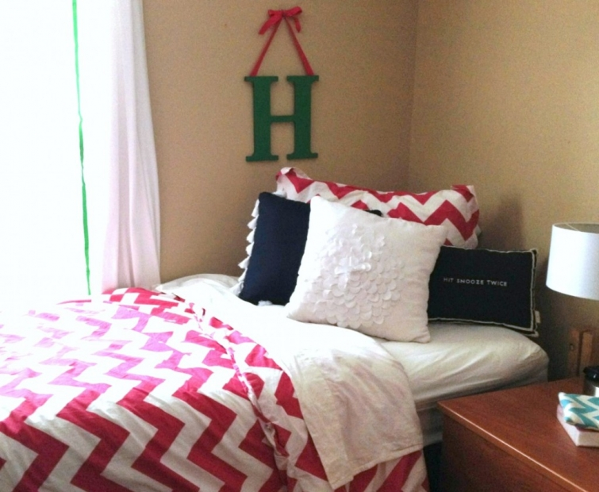
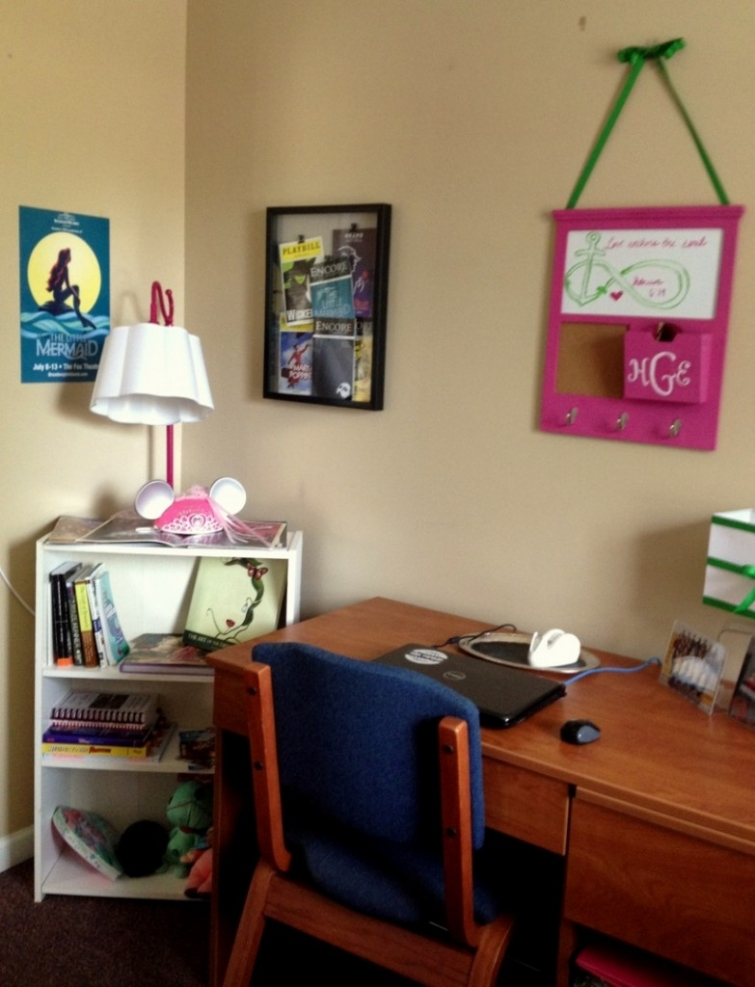

.png)
.PNG)
.PNG)
.PNG)
.PNG)
.PNG)
.JPG)
.JPG)
.PNG)
.PNG)


Sometimes things get soooo crazy you just have to shake your head and laugh. Have you ever had a string of weeks like that – where one crazy thing is followed by another? August went out with a bang for us, and I wanted to share some of the craziness with you so that you wouldn’t think I was just rudely ignoring you. I have been a little um… distracted. Let me just start with two weeks ago with our daughter. (Sorry for the fuzzy phone picture.)

You may remember we moved our daughter into her on-campus apartment at college a couple of weeks ago. What you probably don’t know is that when her third roommate opened the door to her bedroom, she was attacked by fleas. 🙁 Yes, fleas. Not good. They contacted housing, and we went shopping to buy out Target. When we returned at 5:30 (after 3 hours in Target – which daughter’s boyfriend claims has to be some kind of world record), the pest control folks told us we could not enter the room until 9:30. Not good again. But we left, came back at 9:30, worked until 1:00 a.m., and over that weekend we did finally get the room finished, and the bugs were laid to rest (at least for awhile.)

Fast forward to last week. At 10:30 p.m. last Tuesday, daughter called to let us know that a pipe in the ceiling burst and flooded their apartment. She and her 3 roommates had to totally move out. There is no vacant housing in their college except for one “emergency room” with two beds (which the girls said was gross.) There were 4 girls in that apartment. Hmmm…not good again.

So with the help of many folks on their floor, they got all their things moved into the gross emergency apartment. For the following week the 4 of them alternated between staying with friends, driving home and commuting to class, and staying in a nearby hotel (at the expense of the college.) Crazy week for all of them, but now their apartment has some newly painted walls and all new carpeting. Hopefully, there will be no more craziness in the college housing area of our lives for awhile. (But then again, these same young ladies lived in the building where one of the guys on the floor above them accidentally knocked a head off the sprinkler system and flooded that building last year.) Never a dull moment. 🙂
And now to the boys (nothing bad.)
If you read the last post, you may remember that both of our sons are moving to Seattle this week. So there are piles of boxes everywhere, and the garage is one big jumble of furniture – just waiting on the moving truck to arrive here tomorrow to be loaded. What you probably don’t know is that along with this move, they are making a 10 day drive across the country for another road trip to many national parks out west. So along with packing all their things for moving, they are also packing all their belongings for a big camping trip.
And my big old tent has been set up outside to see if it leaks. They want to take it along as well.
And amid all the packing here our air conditioner has decided to die. We have two units – one on the bedroom side, and one on the side that cools the family room, kitchen, and dining room. The bedroom side unit works, but the other side – the side where we spend most of our time – that side is h-o-t. So we have tried to blow the cooler air from one side of the house to the other (but we have had little luck with that.)
 But I guess it is a good thing it went out. You see, the other evening it was too hot to do any work in that part of the house, so I was sitting in the bedroom hallway working on a project. It was pouring rain, and I began to hear a drip..drip..drip in the wall beside me. I sent my husband up to the attic to see if he could see a leak anywhere, and oh yes…there was a big leak around the chimney. So now there are buckets catching water in the attic.
But I guess it is a good thing it went out. You see, the other evening it was too hot to do any work in that part of the house, so I was sitting in the bedroom hallway working on a project. It was pouring rain, and I began to hear a drip..drip..drip in the wall beside me. I sent my husband up to the attic to see if he could see a leak anywhere, and oh yes…there was a big leak around the chimney. So now there are buckets catching water in the attic.
And then…my husband was mowing the grass yesterday and noticed an area that was wetter than all the other areas around it. He dug up a little of the grass and found a leak in an underground pipe. After a trip to the hardware store, he did get that problem repaired. 🙂
So the moving truck comes tomorrow, and everything gets loaded on it. Then the guys leave on Thursday, and we will actually be empty nesters. I know I will miss them terribly, but a little peace and quiet will be a good thing after the craziness of the last few weeks. The blog should return to normal this weekend. I hope to share some decorating from around here and a couple of pretty houses with you very soon and answer the 69 emails that have been waiting in my inbox. And…
I also have a new book I can’t wait to have time to read. 🙂
Hope your week is going well!
Until next time…


.PNG)
Good gracious, Kelly. What a time you have had (so badly wanted to say when it rains it pours!) Empty nest is certainly a new phase in life, but I must say, as the mother of an only child, I just couldn’t imagine what life would be like. Those college years go so quickly and before long they will be returning with spouses and children…it’s just the best!! Wishing you a week of calm…
OMG, you have had your share of mishaps! Hopefully they will all pass. Hope the guys will have a safe travels. I remember when my son left for Washington State. My husband and I called him on the phone every couple of hours. My heart was broken being a empty nester but nervous about him driving by himself clear across country. He is in the Navy so he had to report within a certain amount of days. He said Washington State is a beautiful state but it rained a lot there. I wish your son’s much success in there new life in Washington. Enjoy your time with your husband as a empty nester. May your next several weeks remain calm for you and the rest of your family. <3
All I can say is OH MY WORD. Pestilence, floods, extreme heat, weather extremes: you guys are like the Children of Israel living in Egypt!! You even have your tents. Ha. Thankfully no frogs or sores (at least you didn’t mention them).
——————————————————————–
Thank you for your VERY funny comment Becky! You indeed made me laugh out loud. 🙂
Kelly
Wow! What a month. I feel like you need some type of prize or award for surviving that one!!Hope things settle down soon!
Wow, Kelly!
You have had a lot going on. I am glad things are settling down a bit for you. Keep us posted and get to that book a bit so you can relax!
I hope things are getting back to normal for you. It does seem that everything like that happens at once and in multiples of three. Have a better rest of the week!
When it rains, it pours…and how true for you lately!….So sorry to hear that your daughter and friends had to go through so many problems with their rooms…and of course things break at the most inopportune times!….but you seem to keep on your “happy face” and deal with all that comes your way….Hoping that better things come your way…Enjoy your “empty nesting”…
Oh Kelly — You have had quite a time of it these past few weeks! Thank goodness everything was fixable 🙂 So happy to have you back!
Megan
I’m sorry that you have had such a time of it! Yes, when it rains, it pours! When we came home from our Tybee trip we started packing to move our oldest son down to Ohio State. He’s never really been away from home, so what an adjustment for all of us. My father’s chemo sessions were still there for us all to struggle through and then my washer died. I wish all of those things hadn’t happened to you, but you seem to be handling it with great humor! Thanks because it reminds me that we all need to do just that. BTW, I adored our little Mermaid Cottage! It was my favorite part of the whole trip, just being there with my husband and three teenagers. Also I was CRAZY about the Paris Market! What a fantastic store. The fish tacos were fab. Seaside Sisters was darling. You are so sweet, Kelly. Thank you for all your posts and sharing real life. I hope your September is doubly blessed.
I was at work, headphones on, listening to Christmas music, which reminded me of you. Wow, what a couple of weeks you have had. I love the fact that even though everyone is going in a million directions, you still find time to work on a project (in the hallway, no less). Glad things have started to settle down. Enjoy the book and the changing Season.
Holy cow Kelly!!! That IS a crazy couple of weeks! So sorry for your daughter having all that disruption while in her first weeks at college. You know my two have graduated college and married recently…..another crazy and EXPENSIVE time when its the girl and you are footing the wedding bill…….and its funny but you Never stop worrying about everybody. However, my hubby and I have enjoyed being empty nesters and doing our own thing….although it takes a while to completely start relaxing and finding a new you….not defined by your kids anymore. I hope things calm down for your family and you can relax on your beautiful porch and read that book….let us know what you think of it!!! Your blog is one of my favorite relaxing, me time joys!!! You have a gift with this bog for sure!! : )
Wow, Kelly, that is a lot of things to deal with on many fronts! Hopefully the “calm” will come after the “storms”! Yep….even our grown kids still need a little help from their Mama’s now and then :). Hope your sons have a fun trip out West and settle into our Seattle area more seamlessly than your daughter’s move. Blessings to you.
Never a dull moment! I can totally understand your looking forward to an empty nest!
Ha!
It is so exciting, though, when they all spread their wings. You worry, and hope you did a good job. They still call though, when things get a little overwhelming. Just today I sent off a box of homemade cookies to my baby in LA. (He is 46!) They never get too old for that.
What a busy month or so! I hope your sons found a suitable place to land in Seattle – would love to hear what they decided. I LOVE your daughter’s shower curtain, almost bought that one myself a few weeks ago. Enjoy the book, you got me hooked on Jan Karon, need to find the 8th Mitford book for my collection…
Oh my, what a crazy time. So thankful that all those things that happened are just that things. It is just a season and you all will laugh about it. I think all of us have been there at one time or many times in our lives. Thanks for sharing, it makes my life at the moment sound dull.
Oh my stars! You have had a rough time! Hope you handle stress well! Here’s wishing you peace and calm days ahead.
What a great room for your daughter!!! So cute. I just sent my son a bunch of things from Overstock (he’s in Florida and I’m in Calif)…I’m sure he won’t arrange it all as you have but at least I feel a little better.
Good Grief, Kelly!!!! May things calm down and soon. . . It’ll be a rather abrupt empty nest for you but thankfully technology keeps people connected (boys do not write letters, heh! Mother of two sons!).
Oh Gosh Kelly, you sure have had your share of “Happenings”! Oh, such is Life! You and your husband are such great parents. Well, I can relate to the air conditioner incident. Ours went out early summer, but luckily it was an easy fix with just a switch problem. I was glad it was covered under warranty. Yes, we had just put it in a whole new unit the year before. I guess we did pretty good, since we our going on our 26th year in our home. I am sick of summer at this point. I am tired of having the air on and the mosquitoes are once again horrible, since the rains are down pours here. Oh, I am giggling at the pictures of the camping gear. Like the boys wouldn’t take advantage of all the possible stops along the way, hmm? How exciting. We have moved our two older girls enough in years past that I can relate to your loaded garage. What a task. We still have two yet at home with us. They are claiming they are purchasing a place by the time they move out. Should I be a bit worried? They are savers, but really we might not be empty nesters for quite a while yet. Ha! I don’t care. Their schedules are such that it is even hard to have all four if us sitting for dinner anymore. Oh, to retirement days ahead….I can wait a bit longer. No worries. Smiles Kelly, you are such a TROOPER!
I knew something was going on– but mercy me– that is just crazy! Never a dull moment around your place!! Hoping things are fixed and running smoothly very soon!! I feel my life is whirling around but all is good– celebrating many happy occasions, exploring new beach condo and surrounding area– on an island between Atlantic and Halifax River, remodeling at home, 2 mountain trips and another mini resort trip in Orlando! My goodness, I didn’t know retirement would be so busy and exciting!! Flying off tomorrow back to my hometown for class reunion- class of 1964!! Wow! How quickly that passed by– life IS good and God has given many blessings!
These are the times to be remembered and laughed about later! I remember when my oldest daughter left home! my youngest daughter and I were heartbroken and crying! Finally I said lets go to the store get some goodies and have a picnic at the park! As we were wandering the store aisles, I in my sunglasses, little Heather would sniffle, sigh and tears would com pouring…me too but I had the sunglasses! I leaned To her shoulder and said,”heather you are going to have to quit crying, people think I am beating you! she broke out laughing, then so did I and with a big hug we went on to have a wonderful time!
Here is to your wonderful times ahead!
Wow…that is crazy. Doesn’t it always seem like when one thing happens a few more come along. That happened with us this past weekend but NOTHING like you. You win the prize. Hope this is a better week/month for you and your family.
As for being an empty nester…I have been for 7 years and at first it is nice but then it gets too quiet. Now the girls are all married and giving us our Grands but they all live so far away in other states. I wish they all lived closer because when they come it is for long visits and at the end I am ready for them to go home. Does that sound mean? I love them all but I think with having our own routine etc: it is hard to go from zero to 90 with noise. I just tell myself there is a light at the end of the tunnel and just enjoy our time with them, because all too soon it will be quiet again.
oh my goodness kelly! you sure have had your share of bad luck recently. one day you might be able to look back and have a good laugh but right now it’s all too much to take in….hope nothing else goes wrong and you can have some peace and quiet.
please don’t worry about responding to any emails/comments i’ve left you…i know how much you care about your “fans” so just consider this a small gift to you from me and know that i understand that you appreciate each and every one of us but you need some rest girl!
Yikes…. Sorry about all the craziness!!!!! I know your daughter is a trooper but bless her sweet heart for dealing with all that. Glad she has a sweet mom to help her deal with it. Her room is cute. Good luck to your sons’ new adventures. Ahhh…empty nesting… they do return with even more people!
Hope by now your air is fixed, Kelly! Glad this is only a four day work week for you!
OK… Can’t help myself… When it rains, it pores! Bless your heart! You have had a lot of craziness, haven’t you? I think is cool how God uses all of that for your good. Your might not have caught that leak for a long time if your ac hadn’t gone out. We can relate to the fleas. We had to bomb for them this past weekend and Sally need to do it again. Seems it killed every bug but the fleas! Give me an excuse to go shopping haha. Hope every thing settles down for you. Enjoy your empty nest.
Kelly,
I was beginning to wonder if you had decided to take a late vacation. Little did I realize. Maybe this is life’s way of making the empty nest a little less challenging?! I’m happy to hear most everything has been taken care of and I think you all have handled the fleas and floods with grace! 🙂
Be sure to review the book, I haven’t gotten it yet but it’s on my list.
May the rest of the week go without incident.
xo,
Karen
Oh wow what a time you’ve had! All that would probably make a great comedic movie…sounds like you need a rest from chaos! 😉
Why does it seem that calamities always happen at the most inconvenient time. I have heard it forms our character but oh my goodness! I am really enjoying Coming to Rosemont. I noted that you said some ladies were offended by the language but it is in context for these characters so it is not gratuitous. I am almost finished with book one and then on to book two!! I really love the character, Maggie. Hope you get your AC back on soon Kelly!!
ummmmmm……. WOW!!!!!!! a LITTLE CRAZY is an understatement!! But you survived!! lol…. been missing your posts… I can see that you have had a very good reason for putting the blog on the back burner… 🙂 … hope by now, you are enjoying some AC in the whole house!! Here in Florida, the humidity would be an extreme downer without AC!! Lots of exciting things happening around your neck of the woods…. Empty nesting can be fun… really.. it can!!! lolol…. Looking forward to your next post!!!
Adjusting to being an empty nester was a difficult time thefor me, the MOM, but one of my quickest adjustment! Enjoy! They return with additional love ones.
Woes in life is what builds character. Remember? Ha! Ha!
Started this Jan Karon book yesterday. Good as all her books on Tim/Mitford have been in the past.
Life is like that, isn’t it?! When it rains it pours. 🙂
Wow. You have had a rough go of it recently! The minor inconveniences always seem to be the really irritating ones, don’t they? And they always seem to travel together and visit all at once! Thanks for sharing not only why you’ve been “quiet”, but also your sweet perspective looking ahead. I still have one son at home (17 and a HS junior), but I know college move-in day will be here too quickly. As the kids move on with their lives, a new chapter begins for us as well. I will be praying for your adjustment to a quiet house…and to a new normal. Thanks for sharing. I love your blog, your words, your perspective!
Hi Kelly: Just remember…..those children come back….and bring others with them:-) Just last week I had occasion to host all my children…3 to be exact….and 9 of my 10 grands…all in a small house!!!! Yikees! We so enjoyed having them there because it rarely happens but it was hectic. Then I drove down to Raleigh along with some of them to help my daughter move this weekend. If it doesn’t rain, it pours:-) So enjoy the quiet for the time being:-) So sorry for all that you had to go through this past week but glad that it was rectified so quickly. Life….isn’t it interesting:-) Blessings
Hello, I have been missing your posts, I don’t know where they have gone. We have been empty nesters for a year now and I can say I’m not a fan. We have fathers day here in Perth Western Australia on Sunday and I am looking forward to having a full house x
Oh my goodness! When it rains, it pours! (No pun intended.) 🙂 I just figured you were busy with school–and we all know that’s busy enough! Hopefully, things will start to settle down for you this week.
What an adventure your sons will have! Definitely the stuff that memories are made of. I would imagine they’re taking a northern route, but tell them that Nebraska’s state motto is “The good life”…lots of great stuff to be found.
Enjoy the rest of your week…please! It’s gotta get better! 🙂